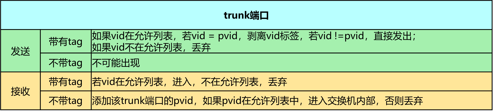
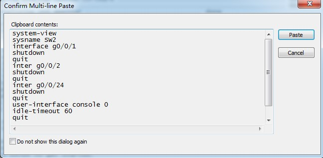

1. 实验目的
了解VLAN（虚拟局域网）的作用；
掌握跨交换机的VLAN的配置方法；
掌握Trunk和Hybrid端口的配置方法；
了解VLAN数据帧的格式、VLAN标记添加和删除的过程。
2. 实验任务
在本实验模拟的某大型公司网络场景中，为满足众多员工的网络接入需求，我们部署了两台接入交换机——SW2和SW3。为确保网络的稳定和高效运行，我们在这两台交换机上划分了不同的VLAN，以隔离广播域，进而优化网络性能。
考虑到该公司员工数量众多，且同一部门的员工可能通过不同的交换机接入网络，为了实现这些员工在不同交换机之间仍能顺畅通信，我们必须对交换机之间的链路进行特殊配置。为此，我们将这些链路设置为干道模式（Trunking），确保相同VLAN的数据包能够在不同的交换机之间无缝传输。
3. 实验原理
3.1. VLAN概要
由一台或多台交换机/集线器所组成的1个广播域称为扁平网络（flat network）。相互连接的硬件会接收有网络发来的广播帧。因此，随着连接硬件数量的增加，广播数据也会增加，网络状况也就越发混杂。为了减少广播数据，可以采用将整个扁平网络进行逻辑分段的VLAN（Virtual LAN）技术——一种专门为隔离二层广播报文设计的虚拟局域网技术。在一个VLAN中使用同一个广播域，不同的VLAN用户属于不同的广播域，它不能接收来 自于不同VLAN用户的广播报文，因此可以有效地控制该域内广播通信的规模。
提示
网络中将传播过多的广播信息而引起的网络性能恶化的现象称为广播风暴。广播帧属于二层并不会跨越三层，所以为了解决广播风暴，可以使用三层设备隔离广播域，减小广播域范围，比如可以使用路由器来隔离广播域，但由于路由器属于三层设备，对数据的转发容易形成瓶颈，因此一般使用VLAN来隔离广播域。
3.2. VLAN帧格式
当某个VLAN需要跨越多个交换机通信时，一般会使用 中继端口（trunk port或Hybrid port） 的VLAN标签（tag VLAN）。IEEE 802.1Q标准规定在原有的标准以太网帧格式上增加一个特殊的标志域——tag域，用于表示数据帧所属的VLAN ID，带有VLAN标签的数据包可以通过中继端口完成以太网数据帧的收发。

在以太网中，TPID的值为0x8100。如果该值不是0x8100，那么该域则不是表示TPID信息，而是被当作“长度/类型”数据域被识别。
TCI又分为PCP、CFI和VLAN ID三个域。
PCP（Priority Code Point）：该域占用3个bit位，用于标识数据帧的优先级。
CFI（Canonical Format Indicator）：该域仅占用1bit 位，如果该位为0，表示该数据帧采用规范帧格式，如果该位为1，表示该数据帧为非规范帧格式。
VLAN ID：该域占用12个 bit 位，它明确指出该数据帧属于某一个VLAN。0仅用于识别PCP中表示的优先级，4095（0xFFF）为预留值，所以VLAN ID 表示的范围为 1-4094。
3.3. VLAN端口的分类
根据交换机端口对 VLAN 数据帧的处理方式，可以将交换机的物理端口分为三种类型： Access port、 Trunk port 和 Hybrid port。交换机的每一个物理端口（无论是Access还是Trunk或Hybrid port）都配置有缺省VLAN ID（PVID，Port default VLAN ID）。 一般默认的PVID等于1，即属于VLAN 1，也可以人为设置PVID。
一个VLAN 数据帧可能带有Tag（称为Tagged VLAN帧，或简称Tagged帧），也可能不带Tag（称为Untagged VLAN帧，或简称Untagged帧）。所有达到这个端口的Untagged帧将一律打上该端口PVID的tag，划分到PVID所指代的VLAN中。
3.3.1. Access端口
Access 端口一般是指那些连接不支持 VLAN 技术的终端设备的端口，这些端口接收到的数据帧都不包含 VLAN 标签，而向外发送数据帧时，必须保证数据帧中也不包含 VLAN 标签。交换机的Access 端口一般接主机或路由器。
Access端口收报文 ：收到一个报文,判断是否有VLAN标签：如果没有则打上端口的PVID（默认VLAN ID），并进行交换转发；如果有，交换机会检查这个报文的tag中的VID是否与PVID相同，如果相同，则队这个Tagged帧进行转发，如果不同，则直接丢弃。
Access端口发报文 ：将报文的VLAN信息剥离，直接发送出去。
3.3.2. Trunk端口
Trunk 端口一般是指那些连接支持 VLAN 技术的网络设备（如交换机）的端口，这些端口接收到的数据帧一般都包含 VLAN 标签（数据帧 VLAN ID 和端口缺省 VLAN ID 相同除外），而向外发送数据帧时，必须保证接收端能够区分不同 VLAN 的数据帧，故常常需要添加 VLAN 标签（数据帧 VLAN ID 和端口缺省 VLAN ID 相同除外）。一般用于交换机之间的连接。
Trunk端口收报文 ：收到一个报文，判断是否有VLAN标签。如果没有则打上端口的PVID（默认VLAN），再进行交换转发；如果有判断该trunk端口是否允许该 VLAN的数据进入，如果可以则转发，否则丢弃。
Trunk端口发报文 ：比较端口的PVID（默认VLAN）和将要发送报文的VLAN标签，如果两者相等则剥离VLAN标签，再发送，如果不相等则直接发送。
3.3.3. Hybrid端口
Hybrid 端口是一种灵活的端口模式，结合Access和Trunk端口的特性。在Hybrid模式下，端口可以关联到多个VLAN，并且能够接收和发送多个VLAN的报文。这使得Hybrid端口既适用于交换机之间的连接（类似于Trunk端口的特性），也适用于连接用户的计算机（类似于Access端口的特性）。与Trunk端口相比，Hybrid端口的一个显著区别在于它允许配置多个VLAN的报文不带标签（tagged或untagged），这取决于用户的配置。而Trunk端口则仅允许缺省VLAN（通常是VLAN 1）的报文不带标签。这种灵活性使得Hybrid端口在某些网络场景中更加适用，特别是在需要同时处理带标签和不带标签报文的场合。
Hybrid端口在处理报文时，根据报文的方向（接收或发送）具有不同的行为。
Hybrid端口收报文 ：
当Hybrid端口接收到一个报文时，它首先检查该报文是否带有VLAN标签。
如果报文没有带VLAN标签（即Untagged），则端口会为该报文打上该端口的PVID（默认VLAN ID），并将该报文进行交换转发。
如果报文带有VLAN标签（即Tagged），则Hybrid端口会检查该VLAN是否允许通过该端口。如果允许，则报文会被转发；如果不允许，则报文会被丢弃。这里需要注意的是，在接收报文时，Hybrid端口的Untagged配置是不起作用的，因为Untagged配置仅影响发送报文时的行为。
Hybrid端口发报文 ：
当Hybrid端口准备发送一个报文时，它会检查该报文所属的VLAN在该端口的配置属性（即是否为Untagged或Tagged）。
如果该VLAN在本端口被配置为Untagged，则Hybrid端口会剥离该报文的VLAN标签（即去掉VLAN信息），然后再发送该报文。
如果该VLAN在本端口被配置为Tagged，则Hybrid端口会保留报文的VLAN标签，并直接发送该报文。
备注
以太网交换机带VLAN标签的帧转发说明
当交换机某个端口接收到一个数据帧时，它首先检查该数据帧是否带VLAN标签。如果数据帧没有带VLAN标签，交换机将会使用该端口的缺省VLAN ID（pvid）作为该数据帧的VLAN ID。如果数据帧带有VLAN标签，交换机会进一步验证该VLAN标签是否在允许列表中。如果不在允许列表中，该数据帧将被丢弃。 接下来，交换机将结合VLAN ID进行源MAC地址学习，并更新MAC地址表。随后，根据数据帧的目的MAC地址和VLAN ID，交换机在MAC地址表中查找，并将数据帧转发到相应的端口。 在发送数据帧的端口，交换机根据该VLAN ID的类型（Tagged或Untagged ）来决定是否去除VLAN标签。最后，交换机将发送处理后的数据帧。
关于VLAN帧转发的更多详细信息，建议参考《计算机网络实验教程》以及《奠基·计算机网络（华为微课版）》等文献。
4. 实验环境与分组
交换机2台，计算机2台，2人一组。
5. 实验设备和组网要求
本实验室已选用华为品牌的交换机和路由器作为核心设备。实验机柜的设备从上至下依次为 ATM 管理机、R1 路由器、R2 路由器、SW1 三层交换机、SW2 和 SW3 二层交换机。ATM 管理机与所有设备（两台路由器和三台交换机）的 console 端口相连接，通过 Telnet 重定向功能，利用 3001 至 3005 端口，可以便捷地访问 R1、R2、SW1、SW2 和 SW3。
备注
在组网配置过程中，学生们仅需通过 Telnet 连接到 ATM 的 IP 地址，随后调整实验设备对应的 ATM 远程端口，便能顺利登录到目标路由器或交换机进行实验操作。此设计避免了频繁插拔 console 端口，也省去了搬运和重新连接设备的繁琐步骤。这种配置不仅确保了实验的高效进行，更在最大程度上保护了昂贵的网络设备不受损坏。
提示
Console口说明
通过Console口登录设备适用于首次登录交换机或无法远程登录交换机，以及设备无法启动的场景。通过Console口登录设备是指使用专门的Console通信线缆将用户PC的串口与交换机的Console口相连，在进行相应的配置后实现在本地管理交换机。该方式是登录交换机最基本的方式，属于带外管理，也是其他登录方式（如Telnet、STelnet）的基础。
实验机柜网络拓扑图（Console 线表示路由器或交换机的配置口）
路由器（型号：AR1220E-S）：ATM、R1、R2
三层交换机（型号：S5700-48TP-SI）：SW1
二层交换机（型号：S5700S-28P-LI）：SW1、SW2
计算机：Stu1（PCA）、Stu2（PCB）、Stu3（PCC）、Stu4（PCD）
实验中用到的所有配置命令都可以从官方提供的产品文档里查询：
路由器AR1220官方产品文档链接：https://support.huawei.com/enterprise/zh/routers/ar1220e-s-pid-250417497
交换机S5700系列官方产品文档链接：https://support.huawei.com/hedex/hdx.do?docid=EDOC1100318314
实验设备网络拓扑图
本次实验需要在上述的实验机柜里完成，要把机柜里面的网络拓扑改成如下结构：
6. 实验步骤
6.1. 通过telnet登录交换机
6.1.1. Step1：
打开SecureCRT，点击窗口中的“快速连接”图标，如图所示：
6.1.2. Step2：
在弹出的窗口中，输入需通过telnet访问的设备IP（见表 ATM管理机地址表1 ）和端口号，然后点击“连接”即可。（SW2的port为3004，SW3的port为3005）如图所示：
机柜编号 |
ATM管理路由器的IP地址 |
|---|---|
1 |
10.251.130.241 |
2 |
10.251.130.242 |
3 |
10.251.130.243 |
4 |
10.251.130.244 |
5 |
10.251.130.245 |
6 |
10.251.130.246 |
7 |
10.251.130.247 |
8 |
10.251.130.248 |
9 |
10.251.130.249 |
10 |
10.251.130.250 |

交换机不需要输入用户名和密码 。

6.2. 恢复出厂设置(清空上一次的配置)
每次做实验前，先清空上一次的配置，本次实验需清空SW2、SW3的配置。
6.2.1. Step1：
在用户视图下，使用如下命令进行配置的清空
1 <Quidway>reset saved-configuration //清除配置
2 The device configurations will be erased to reconfigure. Are you sure?(y/n):y //输入y继续删除
3 <Quidway>display saved-configuration //查看删除后的配置

6.2.2. Step2：
在用户视图下，使用如下命令清空配置，并进行重启。注意不要保存到启动配置。
1<Quidway>reboot //重启
2All the configuration will be saved to the next startup configuration. Continue? [y/n]:n //输入n不保存到启动配置
3System will reboot! Continue? [y/n]: //输入y，继续重新启动
4<Quidway>display current-configuration //重启后查看当前配置
6.3. 导入设备初始配置
初始配置用于关闭不需要的接口和为网络设备命名，以构建符合本实验的网络拓扑。
SW2导入下列初始配置。
1 system-view
2 sysname SW2
3 user-interface console 0
4 idle-timeout 60
5 quit
6 int range g0/0/1 to g0/0/3
7 shutdown
8 quit
9 int g0/0/24
10 shutdown
11 quit
12 quit
上述命令功能为：
进入系统视图
为交换机配置系统名称
进入console配置模式
设置超时时间为60min，默认为10min
退出console配置模式
进入G0/0/1 到G0/0/3 端口配置模式
关闭G0/0/1 到G0/0/3 端口
退出G0/0/1 到G0/0/3 端口配置模式
进入G0/0/24 端口配置模式
关闭G0/0/24 端口
退出G0/0/24 端口配置模式
退出系统视图
SW3导入下列初始配置
1 system-view
2 sysname SW3
3 user-interface console 0
4 idle-timeout 60
5 quit
6 int range g0/0/1 to g0/0/3
7 shutdown
8 quit
9 int g0/0/24
10 shutdown
11 quit
12 quit
导入信息步骤如下图所示。复制以上的代码并分别粘贴入SW2、SW3。
点击Paste即可。
提示
为什么要导入初始配置？
原因在于，我们的实验机柜里的设备是互联互通的，为了能构建本实验的组网图，需要断开与其他设备（交换机SW1、路由器R1和R2）的连接，只保留SW2和SW3之间的连接端口。
6.4. 配置计算机IP地址
配置各台计算机的IP地址。打开“控制面板” -> “网络和Internet” -> “查看网络状态和任务” -> “更改适配器设置”。在“本地连接”上点击右键，选择“启用”。

点击“属性”。
PCA的IP地址配置如下：
双击“Internet 协议版本4（TCP/IPv4）”按照下表设置PCA、PCB、PCC和PCD这四台电脑的IP地址。
计算机 |
IP地址 |
PCA |
192.168.2.11/24 |
PCB |
192.168.3.12/24 |
PCC |
192.168.2.13/24 |
PCD |
192.168.3.14/24 |
6.5. 进入交换机配置vlan2添加相应接口
6.5.1. Step1：
在SW2交换机上的系统视图下使用下列命令进行VLAN配置：
SW2基本配置
1system-view //进入系统视图
2vlan 2 //创建vlan 2
3port g0/0/4 //把g0/0/4口放进vlan 2
4port g0/0/11 //把g0/0/11口放进vlan 2
6.5.2. Step2：
在SW3交换机上的系统视图下使用下列命令进行VLAN配置：
SW3基本配置
1system-view //进入系统视图
2vlan 2 //创建vlan 2
3port g0/0/4 //把g0/0/4口放进vlan 2
4port g0/0/13 //把g0/0/13口放进vlan 2
6.5.3. Step3：
在SW2和SW3上查看划分的vlan信息：
SW2 vlan:
SW3 vlan:
6.5.4. Step4：
在PCA上能ping通 PCC，在PCB上ping PCD，是否ping通?
PCA ping PCC:
PCB ping PCD:
6.6. 进入交换机配置vlan3接口ip并观察连通性
6.6.1. Step1：
在SW2交换机上的系统视图下使用下列命令进行配置：
SW2基本配置
1vlan 3 //创建vlan 3
2port g0/0/12 //把g0/0/12口放进vlan 3
3quit //退出至接口视图
在SW2上使用“display vlan”命令查看VLAN的信息。
6.6.2. Step2：
在SW3交换机上的系统视图下使用下列命令进行配置：
SW3基本配置
1vlan 3 //创建vlan 3
2port g0/0/14 //把g0/0/14口放进vlan 3
3quit //退出至接口视图
在SW3上使用“display vlan”命令查看VLAN的信息。
6.6.3. Step3：
在PCD上ping PCB验证连通性，还是没有ping通。

6.7. 配置接口trunk模式并验证连通性
6.7.1. Step1：
将SW2与SW3的g0/0/4接口模式配置为trunk，使得所有VLAN都可以通过。 在SW2和SW3交换机的系统视图下使用下列命令进行配置：
SW2 和 SW3 基本配置
1interface g0/0/4 //进入g0/0/4接口
2undo port default vlan //删除端口下的缺省vlan配置
3port link-type trunk //把端口的连接类型改为trunk模式
4port trunk allow-pass vlan all //Trunk接口模式下允许通过所有vlan
5quit //退出至接口视图
6.7.2. Step2：
在SW2和SW3上使用“display vlan”命令查看VLAN的信息，我们看到vlan3有trunk接口的g0/0/4，如图：
SW2 vlan:
SW3 vlan:
6.7.3. Step3：
在PCB上使用ping PCD命令测试连通性，如图：
6.7.4. Step4：
在PCA上使用ping PCC命令测试连通性，如图:
6.8. 配置交换机接口Hybrid模式
6.8.1. Step1：
将SW2与SW3的g0/0/4接口模式配置为Hybrid，参照下面的命令对两台交换机的G0/0/4端口进行设置。
Hybrid实验拓扑图:
在SW2和SW3交换机的系统视图下使用下列命令进行配置：
SW2 和 SW3 基本配置
1interface g0/0/4 //进入g0/0/4接口
2undo port link-type //删除端口下的连接类型
3Warning: This command will delete VLANs on this port. Continue?[Y/N]: //输入Y，删除g0/0/4端口的VLAN配置
4port link-type hybrid //把端口的连接类型改为hybrid模式
5port hybrid pvid vlan 1 //把g0/0/4的缺省VLAN（pvid）写成1
6port hybrid tagged vlan 2 //从g0/0/4发出的vlan2数据帧时带标签
7port hybrid untagged vlan 3 //从g0/0/4发出的vlan3数据帧时不带标签
6.8.2. Step2：
在SW2和SW3上使用“display vlan”命令查看VLAN的信息，我们看到vlan3 g0/0/4有带标签，vlan2 g0/0/4不带标签，如图：
SW2 vlan:
SW3 vlan:
此时，PCA 能ping通PCC，PCB不能ping通PCD。
注意
请解释Hybrid模式中，PCB不能ping通PCD的原因。修改两个交换机的G0/0/4端口的配置，写出配置命令，使PCB和PCD能够ping通。